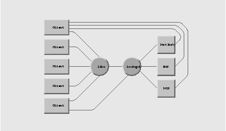

<!DOCTYPE HTML PUBLIC "-//W3C//DTD HTML 3.2 Final//EN">
<html>
<!-- Created with LatinByrd III -->
<!-- File: /NextLibrary/Documentation/NEXTSTEP_In_Focus/1993Summer/NetInfo_Lookup_Server.rtfd -->
<!-- Date: Sun Jan  1 15:46:18 2023 -->
<head>
<title>NetInfo_Lookup_Server</title>
</head>

<body bgcolor="#FFFFFF" text="#000000" link="#0000FF" alink="#FF00FF" vlink="#FF0000">

<basefont size=3>

<p><font face="Times"><i>NEXTSTEP In Focus</i>, Summer 1993 (Volume 3, Issue 3).</font><br>
<font face="Times">Copyright</font> &copy;<font face="Times">1993 by NeXT Computer, Inc.&nbsp; All Rights Reserved.</font>

<p><br><br>

<p><font face="Helvetica" size="+4"><b>The NetInfo Lookup Server--lookupd</b></font>

<p><font face="Helvetica">Alan M. Marcum</font>

<p><br><br><br>

<p><font face="Times" size="+1">Relatively few processes communicate directly with NetInfo. Yet, many processes need information that resides in NetInfo. How do these processes get that information? They use an intermediary: <b>lookupd</b>.</font>

<p><font face="Times" size="+1">This article explains what <b>lookupd</b> is and what it does, and gives you some tips on spotting and fixing problems that involve it.</font>

<p><br><br>

<p><font face="Helvetica" size="+2"><b>WHAT IS LOOKUPD?</b></font>

<p><font face="Times" size="+1"><b>lookupd</b> is a daemon that simplifies the tasks of the UNIX library routines that need system and network administration information. These routines, such as getpwuid(), gethostbyname(), and getgrent(), are principally part of the C library (also known as libc). They access information like user names, computer addresses, and group IDs.</font>

<p><font face="Times" size="+1"><b>lookupd</b> gets information from NetInfo, the DNS, NIS, and the UNIX system files. (The UNIX system files are actually accessed as part of consulting NIS.) It uses Mach messages and SunRPCs to provide information to callers, usually libc routines.</font>

<p><font face="Times" size="+1">NeXT created <b>lookupd</b> to avoid rewriting all the libc routines any time a new information service is added. If, for example, we wanted client processes to get network administration information from a relational database, we could modify <b>lookupd</b> so it referenced the information in the database. This would be easier than modifying all the appropriate libc routines to give them relational database access.</font>

<p><font face="Times" size="+1">In addition to providing a centralized data access service, <b>lookupd</b> also caches some information. This caching improves system responsiveness and decreases network traffic.</font>

<p><font face="Times" size="+1">Figure 1 shows how <b>lookupd</b> is used. Most client processes that need information get it through the libc routines. Those routines call <b>lookupd</b>, which gets information from NetInfo, the DNS, NIS, and (through NIS) the UNIX system files. Note, though, that <b>lookupd</b> doesn't prevent some client processes from accessing the information sources directly. Furthermore, even though most access to <b>lookupd</b> is through libc, clients can also invoke <b>lookupd</b>'s services directly.</font>

<p>

<p><font face="Helvetica" size="+1"><b>Figure 1:</b></font>&nbsp; <font face="Times" size="+1"><i>Clients get NetInfo, DNS, and NIS information directly or through libc and lookupd.</i></font>

<p><font face="Times" size="+1">In this figure, the first client process could be one like <b>sendmail</b>. <b>sendmail</b> calls libc to resolve host names, NetInfo to get configuration information, and the DNS to look up MX records. It also consults NIS in response to NIS map access directives in its configuration file.</font>

<p><font face="Times" size="+1">The last process in the figure might be one like&nbsp; <b>loginwindow</b>, which uses libc to do things&nbsp; like look up user names. <b>loginwindow</b> also communicates directly with <b>lookupd </b>for cache management.</font>

<p><font face="Times" size="+1">When searching for information, <b>lookupd</b> consults its information sources in the following order:</font>

<p>

<table cellspacing=0 cellpadding=0>

<tr valign=top>

<td nowrap><font face="Helvetica"><b>1.</b></font></td>

<td><font face="Times" size="+1"><b>lookupd</b>'s cache</font></td></tr>

<tr valign=top>

<td height=10></td></tr>

<tr valign=top>

<td nowrap><font face="Helvetica"><b>2.</b></font></td>

<td><font face="Times" size="+1">The NetInfo domain hierarchy</font></td></tr>

<tr valign=top>

<td height=10></td></tr>

<tr valign=top>

<td nowrap><font face="Helvetica"><b>3.</b></font></td>

<td><font face="Times" size="+1">The DNS, if appropriate</font></td></tr>

<tr valign=top>

<td height=10></td></tr>

<tr valign=top>

<td nowrap><font face="Helvetica"><b>4.</b></font></td>

<td><font face="Times" size="+1">NIS</font></td></tr>

</table>

<p><font face="Times" size="+1">This search order applies in all of NeXT's releases through NEXTSTEP 3.1. To find out about the DNS see Albitz and Liu 1992, and Nemeth, Snyder, and Seebass 1989; to find out about NIS see Nemeth, Snyder, and Seebass 1989, and Stern 1991.</font>

<p><br><br>

<p><font face="Helvetica" size="+2"><b>LOOKUPD CACHING</b></font>

<p><font face="Times" size="+1">There are various types of <b>lookupd</b> caches, and each type is flushed and refreshed differently. The following sections provide details.</font>

<p><font face="Helvetica" size="+1"><b>Password entries cache</b></font>

<p><font face="Times" size="+1">One of the caches maintained by <b>lookupd</b> holds the information used by the getpwent() library routine. This routine lists the users known to the system (see Computer Systems Research Group 1986 and the UNIX manual pages). <b>lookupd</b> can optionally cache the information it provides to getpwent(). The cache is enabled by default.</font>

<p><font face="Times" size="+1"><b>lookupd</b> uses a &quot;lazy refresh&quot; on this cache. By default, <b>lookupd</b> loads the cache when it starts, normally at boot time. It then refreshes the cache only if the cache is referenced. At regular intervals<b>, lookupd</b> checks to see whether the cache has been referenced, and reloads it if it has. In addition, if the cache is referenced after a periodic check, <b>lookupd</b> sends the old data to the caller, then refreshes the cache. (See the <b>lookupd</b>(8) UNIX manual page.)</font>

<p><font face="Times" size="+1">To gain some perspective about this cache, consider that NEXTSTEP uses getpwent() only to complete a partial user name. For example, you can invoke this function in Workspace Manager's Finder by typing <b>~</b> followed by a partial user name, and pressing the Escape key. For example, if <b>smarco</b> is a user name, type &quot;~smar&quot;, then press Escape. The Finder completes the name for you if the prefix you supplied is unique.</font>

<p><font face="Helvetica" size="+1"><b>Logged-in user cache</b></font>

<p><font face="Times" size="+1">The user information for the currently logged-in user and the <b>root</b> user are cached when someone logs in through <b>loginwindow</b>. <b>lookupd</b> refreshes this cache every 20 minutes and whenever the logged-in user changes his or her password. It clears the cache when the user logs out.</font>

<p><font face="Helvetica" size="+1"><b>Local host information</b></font>

<p><font face="Times" size="+1">The host information--host name and Internet address--for the local computer are cached when <b>lookupd</b> starts. If these change, <b>lookupd</b> must be restarted, typically by rebooting the computer.</font>

<p><font face="Helvetica" size="+1"><b>Printers</b></font>

<p><font face="Times" size="+1">Information regarding available network printers is also cached by <b>lookupd</b>. Each time the printer database is accessed through <b>lookupd</b>, <b>lookupd</b> verifies the validity of the cache by comparing the current checksums of the source databases with the checksums from when the cache was last loaded. If the cache is out of date, <b>lookupd</b> reloads it and sends the new data to the caller. If the cache is current, <b>lookupd</b> just sends the data from the cache.</font>

<p><font face="Helvetica" size="+1"><b>UNIX Groups</b></font>

<p><font face="Times" size="+1">The cache for UNIX groups is maintained and consulted just like that for printers. It's referenced by the getgrent() library routine, but not by getgrnam() or getgrgid().</font>

<p><font face="Helvetica" size="+1"><b>Other hosts</b></font>

<p><font face="Times" size="+1"><b>lookupd</b> maintains a one-record cache for information about computers other than the local computer. The cache contains the most recently referenced host name and Internet address. <b>lookupd</b> accesses the cache in response to calls to gethostbyname(), but not for calls to gethostbyaddr().</font>

<p><font face="Helvetica" size="+1"><b>Mount points</b></font>

<p><font face="Times" size="+1">The cache for mount points--locations for imported file systems--is like the cache for printers. It's accessed for calls to getmntent().</font>

<p><br><br>

<p><font face="Helvetica" size="+2"><b>LOOKING IT UP WITH LOOKUPD</b></font>

<p><font face="Times" size="+1">Now let's examine what happens when an application makes a call to a library routine that provides system administration information. For this example, assume the application calls gethostbyname() to get information about a particular computer. The remote computer is <b>Tute.EDU</b> and is outside Rhino Aviation's network.</font>

<p><font face="Times" size="+1">First, the application invokes gethostbyname(). This executes code in libc; the libc code checks to see if NetInfo is running. It is, so the libc code sends a Mach message to <b>lookupd</b>, requesting that a gethostbyname() operation be performed.</font>

<p><font face="Times" size="+1">When it receives the Mach message, <b>lookupd</b> first checks to see if the request is for information about the local computer. It isn't, so <b>lookupd</b> then checks to see if the last host name referenced was <b>Tute.EDU</b>. If it was, <b>lookupd</b> would return the information from the cache. For this example, though, let's assume some other computer was referenced last.</font>

<p><font face="Times" size="+1">Next <b>lookupd</b> consults NetInfo to get the information. This results in an NI_LOOKUPREAD SunRPC message to the local NetInfo server--<b>netinfod local</b>. Since the information isn't in NetInfo, this call returns an error and <b>lookupd</b> repeats the process, ascending the NetInfo domain hierarchy. This may require locating an appropriate NetInfo server, and so could require connecting or binding. (See &quot;NetInfo Binding and Connecting.&quot;)</font>

<p><font face="Times" size="+1">Since the information isn't in NetInfo and the application process is requesting machine-related information, eventually <b>lookupd</b> consults the DNS, using the normal resolver library routines. In this example, it finds the information in the DNS. It then returns the host information for <b>Tute.EDU</b>, using a Mach message, to the gethostbyname() libc routine. The libc routine then returns the information to the client application.</font>

<p><font face="Times" size="+1">If the information hadn't been available from the DNS, then <b>lookupd</b> could have checked NIS, using the normal NIS semantics. At Rhino, though, NIS isn't used, so <b>lookupd</b> always stops with the DNS.</font>

<p><br><br>

<p><font face="Helvetica" size="+2"><b>MANAGING LOOKUPD</b></font>

<p><font face="Times" size="+1">Ordinarily, you may not have to deal with <b>lookupd</b> directly, so you don't need to do anything to manage it. However, if you want to know what <b>lookupd</b> is doing over time, it can log all requests it handles. You can also restart it if it's running into problems or if you need to refresh caches or tallies. The following sections explain how to work with <b>lookupd</b>.</font>

<p><font face="Helvetica" size="+1"><b>Logging lookupd requests</b></font>

<p><font face="Times" size="+1">Beginning in NEXTSTEP Release 3.0, <b>lookupd</b> can log information about requests it receives. You can set the logging option for <b>lookupd</b> in the system startup script <b>/etc/rc</b>. Logging is described fully in the UNIX manual pages under <b>lookupd</b>(8).</font>

<p><font face="Times" size="+1">For example, the arguments <b>-L</b> <i>file</i> cause <b>lookupd</b> to log information about requests it receives to the specified file. Logged information includes the called procedure, the number of calls to the procedure since <b>lookupd</b> started, the time required to process this request, and the total time consumed by all instances of this type of request. (Times are in microseconds.) When appropriate, the argument to the call is also logged, and the argument is prefixed with an asterisk if the data was retrieved from the cache. Figure 2 shows an example of <b>lookupd</b> logging output.</font>

<p><font face="Courier">getservbyname&nbsp;&nbsp;&nbsp;&nbsp;&nbsp;&nbsp;&nbsp;&nbsp;&nbsp;&nbsp;&nbsp; Ncalls: 1&nbsp;&nbsp;&nbsp;&nbsp; Elapsed: 78&nbsp;&nbsp;&nbsp; Total time: 78</font><br>
<font face="Courier">gethostbyname (rhino)&nbsp;&nbsp;&nbsp; Ncalls: 1&nbsp;&nbsp;&nbsp;&nbsp; Elapsed: 32&nbsp;&nbsp;&nbsp; Total time: 32</font><br>
<font face="Courier">getservbyname (ntp)&nbsp;&nbsp;&nbsp;&nbsp;&nbsp; Ncalls: 2&nbsp;&nbsp;&nbsp;&nbsp; Elapsed: 108&nbsp;&nbsp; Total time: 186</font><br>
<font face="Courier">getmntent&nbsp;&nbsp;&nbsp;&nbsp;&nbsp;&nbsp;&nbsp;&nbsp;&nbsp;&nbsp;&nbsp;&nbsp;&nbsp;&nbsp;&nbsp; Ncalls: 1&nbsp;&nbsp;&nbsp;&nbsp; Elapsed: 3384&nbsp; Total time: 3384</font><br>
<font face="Courier">gethostbyname (sabre)&nbsp;&nbsp;&nbsp; Ncalls: 2&nbsp;&nbsp;&nbsp;&nbsp; Elapsed: 18&nbsp;&nbsp;&nbsp; Total time: 50</font><br>
<font face="Courier">gethostbyname (ranger)&nbsp;&nbsp; Ncalls: 3&nbsp;&nbsp;&nbsp;&nbsp; Elapsed: 51&nbsp;&nbsp;&nbsp; Total time: 101</font><br>
<font face="Courier">gethostbyname (*ranger)&nbsp; Ncalls: 4&nbsp;&nbsp;&nbsp;&nbsp; Elapsed: 0&nbsp;&nbsp;&nbsp;&nbsp; Total time: 101</font><br>
<font face="Courier">setpwent&nbsp;&nbsp;&nbsp;&nbsp;&nbsp;&nbsp;&nbsp;&nbsp;&nbsp;&nbsp;&nbsp;&nbsp;&nbsp;&nbsp;&nbsp;&nbsp; Ncalls: 1&nbsp;&nbsp;&nbsp;&nbsp; Elapsed: 24&nbsp;&nbsp;&nbsp; Total time: 24</font><br>
<font face="Courier">getpwnam (smarco)&nbsp;&nbsp;&nbsp;&nbsp;&nbsp;&nbsp;&nbsp; Ncalls: 5&nbsp;&nbsp;&nbsp;&nbsp; Elapsed: 28&nbsp;&nbsp;&nbsp; Total time: 46</font><br>
<font face="Courier">setloginuser (672)&nbsp;&nbsp;&nbsp;&nbsp;&nbsp;&nbsp; Ncalls: 1&nbsp;&nbsp;&nbsp;&nbsp; Elapsed: 64&nbsp;&nbsp;&nbsp; Total time: 64</font><br>
<font face="Courier">getpwnam (*smarco)&nbsp;&nbsp;&nbsp;&nbsp;&nbsp;&nbsp; Ncalls: 6&nbsp;&nbsp;&nbsp;&nbsp; Elapsed: 1&nbsp;&nbsp;&nbsp;&nbsp; Total time: 47</font><br>
<font face="Courier">getmntent (*)&nbsp;&nbsp;&nbsp;&nbsp;&nbsp;&nbsp;&nbsp;&nbsp;&nbsp;&nbsp;&nbsp; Ncalls: 3&nbsp;&nbsp;&nbsp;&nbsp; Elapsed: 39&nbsp;&nbsp;&nbsp; Total time: 3461</font><br>
<font face="Courier">gethostbyname (ranger)&nbsp;&nbsp; Ncalls: 5&nbsp;&nbsp;&nbsp;&nbsp; Elapsed: 38&nbsp;&nbsp;&nbsp; Total time: 406</font><br>
<font face="Courier">getpwnam (*smarco)&nbsp;&nbsp;&nbsp;&nbsp;&nbsp;&nbsp; Ncalls: 7&nbsp;&nbsp;&nbsp;&nbsp; Elapsed: 0&nbsp;&nbsp;&nbsp;&nbsp; Total time: 47</font><br>
<font face="Courier">getpwuid (*67)&nbsp;&nbsp;&nbsp;&nbsp;&nbsp;&nbsp;&nbsp;&nbsp;&nbsp;&nbsp; Ncalls: 8&nbsp;&nbsp;&nbsp;&nbsp; Elapsed: 1&nbsp;&nbsp;&nbsp;&nbsp; Total time: 27</font><br>
<font face="Courier">initgroups (smarco)&nbsp;&nbsp;&nbsp;&nbsp;&nbsp; Ncalls: 1&nbsp;&nbsp;&nbsp;&nbsp; Elapsed: 239&nbsp;&nbsp; Total time: 239</font><br>
<font face="Courier">getgrent&nbsp;&nbsp;&nbsp;&nbsp;&nbsp;&nbsp;&nbsp;&nbsp;&nbsp;&nbsp;&nbsp;&nbsp;&nbsp;&nbsp;&nbsp;&nbsp; Ncalls: 1&nbsp;&nbsp;&nbsp;&nbsp; Elapsed: 1407&nbsp; Total time: 1407</font><br>
<font face="Courier">getpwuid (*0)&nbsp;&nbsp;&nbsp;&nbsp;&nbsp;&nbsp;&nbsp;&nbsp;&nbsp;&nbsp;&nbsp; Ncalls: 9&nbsp;&nbsp;&nbsp;&nbsp; Elapsed: 0&nbsp;&nbsp;&nbsp;&nbsp; Total time: 41</font><br>
<font face="Courier">getpwnam (*root)&nbsp;&nbsp;&nbsp;&nbsp;&nbsp;&nbsp;&nbsp;&nbsp; Ncalls: 8&nbsp;&nbsp;&nbsp;&nbsp; Elapsed: 0&nbsp;&nbsp;&nbsp;&nbsp; Total time: 353</font><br>
<font face="Courier">gethostbyaddr&nbsp;&nbsp;&nbsp;&nbsp;&nbsp;&nbsp;&nbsp;&nbsp;&nbsp;&nbsp;&nbsp; Ncalls: 1&nbsp;&nbsp;&nbsp;&nbsp; Elapsed: 32&nbsp;&nbsp;&nbsp; Total time: 32</font><br>
<font face="Courier">getpwuid (22)&nbsp;&nbsp;&nbsp;&nbsp;&nbsp;&nbsp;&nbsp;&nbsp;&nbsp;&nbsp;&nbsp; Ncalls: 10&nbsp;&nbsp;&nbsp; Elapsed: 27&nbsp;&nbsp;&nbsp; Total time: 68</font><br>
<font face="Courier">gethostbyaddr&nbsp;&nbsp;&nbsp;&nbsp;&nbsp;&nbsp;&nbsp;&nbsp;&nbsp;&nbsp;&nbsp; Ncalls: 2&nbsp;&nbsp;&nbsp;&nbsp; Elapsed: 12&nbsp;&nbsp;&nbsp; Total time: 44</font><br>
<font face="Courier">getservbyport&nbsp;&nbsp;&nbsp;&nbsp;&nbsp;&nbsp;&nbsp;&nbsp;&nbsp;&nbsp;&nbsp; Ncalls: 1&nbsp;&nbsp;&nbsp;&nbsp; Elapsed: 49&nbsp;&nbsp;&nbsp; Total time: 49</font>

<p><font face="Helvetica" size="+1"><b>Figure 2:</b></font>&nbsp; <font face="Times" size="+1"><i>Logged information about lookupd</i></font>

<p><font face="Times" size="+1">Note that since <b>lookupd</b> is invoked by <b>/etc/rc</b> at system boot time, you have to modify <b> /etc/rc</b> and restart the system to enable logging. You can't turn logging on and off dynamically in either NEXTSTEP Release 3.0 or Release 3.1.</font>

<p><font face="Helvetica" size="+1"><b>Restarting lookupd</b></font>

<p><font face="Times" size="+1">Sometimes, you might want to restart <b>lookupd</b>. For example, you might want to force a cache to refresh, change the NetInfo servers being used, or reset the totals reported by the logging feature. You restart a <b>lookupd</b> daemon by sending it a &quot;hang-up&quot; signal, also called a <b>SIGHUP</b>.</font>

<p><font face="Times" size="+1">To do this, first find the <b>lookupd</b> process ID number, using <b>ps</b> for example. Then, run the following command as <b>root</b>, substituting the process ID number for <i>pid</i>:</font>

<p><font face="Courier">kill -HUP <i>pid</i></font>

<p><font face="Times" size="+1">This kills and automatically restarts <b>lookupd</b>.</font>

<p><font face="Times" size="+1">If you were instead to try to restart <b>lookupd</b> by terminating it and rerunning the program, your computer would hang, because the library functions would be unable to contact the new instance. (If you ever find yourself in this state, reboot the computer.)</font>

<p><font face="Times" size="+1"><b>Note:</b> The document references in this and other articles in this issue refer to the books and articles listed in &quot;NEXTSTEP Networking References.&quot;</font>


<p>

</body>
</html>
